流体ソルバは PDE ソルバ ─ 量子力学（GP方程式）まで解けるか
自作ソルバ schrodingerFoam ／ OpenFOAM v2512
@t_kun_kamakiri
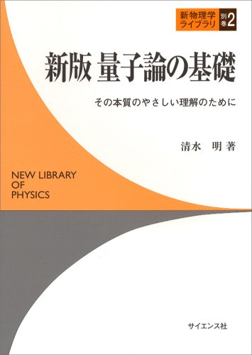
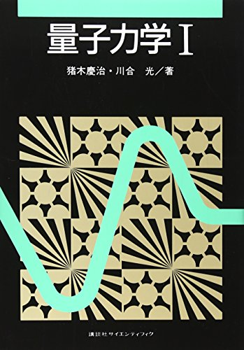
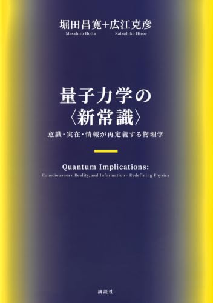
左3冊は物理の定番／右は息抜きの読み物。
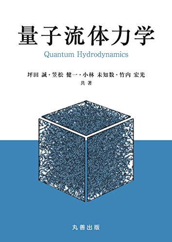
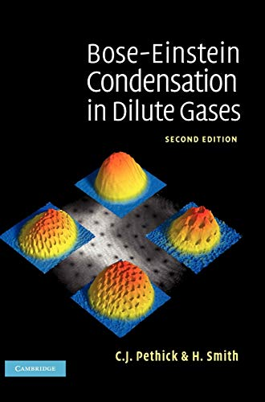
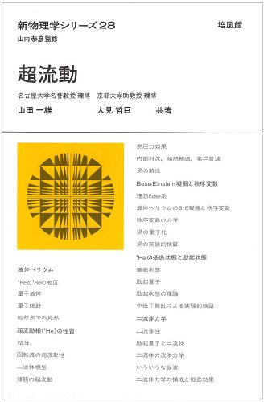
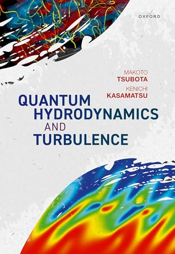
後半（GP方程式・量子渦・量子乱流）はこのあたりが詳しいです。
量子力学の基礎方程式と、その“正体”
量子力学の基礎方程式。粒子の状態を波動関数 \(\psi(\mathbf{x},t)\) で表し、その時間発展を決める。
\[ i\hbar\,\frac{\partial \psi}{\partial t} = -\frac{\hbar^2}{2m}\nabla^2\psi + V(\mathbf{x})\,\psi \]
確率解釈：\(|\psi|^2\) が存在確率密度。
全空間で \(\displaystyle\int |\psi|^2\,d\mathbf{x}=1\)（ノルム保存）。
数学的な正体：
時間1階・空間2階の偏微分方程式（PDE）。
拡散方程式に虚数 \(i\) が付いた形。
→ PDE なら OpenFOAM の土俵。ただし \(\psi\) は複素数。
\(\psi = u + i v\) と置くと、1本の複素方程式が \(u,v\) の連立実方程式になる：
\[ \begin{aligned} \frac{\partial u}{\partial t} &= -D\,\nabla^2 v + \frac{1}{\hbar}V v \\[6pt] \frac{\partial v}{\partial t} &= +D\,\nabla^2 u - \frac{1}{\hbar}V u \end{aligned}\qquad\left(D=\frac{\hbar}{2m}\right) \]
考え方：実部・虚部に分けると、\(\nabla^2\)（ラプラシアン）が主役の
拡散方程式と同じ形になる＝laplacianFoam がそのまま使える形。
あとはポテンシャル項 \(V\)（と後で相互作用 \(g|\psi|^2\)）を足すだけ、という発想。
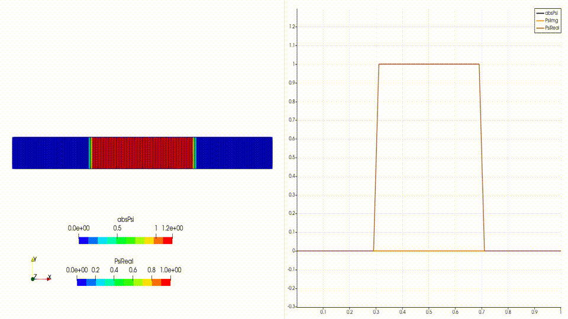
この「laplacianFoam を改造する」方針は、以前 note で挑戦したが失敗していた。前進オイラーで計算が荒れて発散してしまったのだ。
今回、AI が格段に賢くなったので再挑戦。時間の刻み方を Crank–Nicolson に変えてノルムを保存させ、ようやく完成させた（＝次章）。
どのソルバが適しているか／4ステップ改造／なぜCN
ベースは laplacianFoam。
これは拡散方程式だけを解く最小ソルバ：
\[ \frac{\partial T}{\partial t} = \nabla\!\cdot(D\nabla T) \]
シュレーディンガー方程式は「\(i\) 付きの拡散方程式」。 ラプラシアン \(\nabla^2\) が主役という構造がそっくりだから、改造の出発点に最適。
候補と選択
laplacianFoam … ✅ 拡散＝ラプラシアンが核。採用| # | 改造点 | ねらい |
|---|---|---|
| 1 | 場を 2本にする（Psire=u, Psiim=v） | 複素波動関数を表現 |
| 2 | 式を GP方程式の連立に（\(V,\ g|\psi|^2\) を追加） | ポテンシャル・非線形項 |
| 3 | 実時間発展は Crank–Nicolson 反復 | ノルム保存・安定 |
| 4 | 虚時間発展は 完全陰的＋規格化 | 基底状態づくり |
mode を切り替えるだけで「初期状態づくり（虚時間）」と「本計算（実時間）」を1つのソルバで。
前進オイラーは発散する
1ステップごとに波がわずかに増幅 → 時間刻みを小さくしても最後は破綻。
大前提「ノルム保存」が数値的に壊れる。
CN＝ケーリー変換
\[ \psi^{n+1}=\frac{1-\tfrac{i}{2}H\Delta t}{1+\tfrac{i}{2}H\Delta t}\,\psi^{n} \]
\(H\) はエルミート → 更新係数の絶対値がちょうど 1。だからノルムが増えも減りもしない（ユニタリ）。
＊OpenFOAM 組み込みの CrankNicolson は単一場の ddt 用。
ここは \(u\leftrightarrow v\) が連成し、ユニタリ性のための Picard 反復が要るので独自実装。
解く式は \(i\,\frac{\partial\psi}{\partial t} = H\psi\)（\(H=-D\nabla^2+W,\ \ W=V+g|\psi|^2\)）。 時間微分を差分に、右辺 \(H\psi\) を前後の平均（台形則）で評価する：
\[ i\,\frac{\psi^{n+1}-\psi^{n}}{\Delta t} = \tfrac12 H\big(\psi^{n+1}+\psi^{n}\big) \]
↓ \(\psi^{n+1}\)（未知）を左辺、\(\psi^{n}\)（既知）を右辺に集める
\[ \underbrace{\Big(I+\tfrac{i\Delta t}{2}H\Big)}_{\text{陰的・疎行列}}\psi^{n+1} = \underbrace{\Big(I-\tfrac{i\Delta t}{2}H\Big)}_{\text{陽的・既知}}\psi^{n} \]
fvm::laplacian）で離散化 → 疎行列に。
手順
nCorrectors 回）で \(W\) を更新しながら 2 を繰り返す実装（2場の連成）
\(\psi=u+iv\) なので、CN は \(u,v\) を連立で解く：
\[ \begin{aligned} u^{n+1}+\tfrac{\Delta t}{2}H v^{n+1} &= u^{n}-\tfrac{\Delta t}{2}H v^{n}\\ v^{n+1}-\tfrac{\Delta t}{2}H u^{n+1} &= v^{n}+\tfrac{\Delta t}{2}H u^{n} \end{aligned} \]
\(u\) の式に \(v\) が、\(v\) の式に \(u\) が現れる → 2つの場を連立で同時に解く。
＊Picard反復：非線形項の係数 \(W=V+g|\psi|^2\) を仮の解で計算 → 線形問題を解く → 得た解で \(W\) を更新 → また解く…を繰り返して自己整合させる逐次代入法（不動点反復）。
虚時間発展は \(\Delta t\to -i\Delta\tau\) の置き換え。完全陰的に解けば無条件安定＋規格化で基底状態が残る。
ノルム保存と基底状態の検証
基底状態は静的GP方程式（化学ポテンシャル \(\mu\)）で決まる：
\[ \mu\,\psi = \Big[-\frac{\hbar^2}{2m}\nabla^2 + V(\mathbf r) + g|\psi|^2\Big]\psi \]
左から 運動エネルギー項 \(-\frac{\hbar^2}{2m}\nabla^2\) ／ 外部ポテンシャル \(V\) ／ 相互作用項 \(g|\psi|^2\)
（相互作用項があるのがGP方程式。無ければ通常のシュレーディンガー方程式）
相互作用が強い（粒子数が多い）と運動エネルギー項を無視できる → \(\mu=V+g\,n\)。ここで \(V=\tfrac12 m\omega^2 r^2\) は調和振動子ポテンシャル（トラップ）。密度 \(n=|\psi|^2\) は放物線状に決まる：
\[ n(\mathbf r)=|\psi|^2=\frac{\mu-V(\mathbf r)}{g}=\frac{\mu-\tfrac12 m\omega^2 r^2}{g}\qquad(\text{端 }n=0\text{ が }R_{\rm TF}) \]
\(\mu=\tfrac12 m\omega^2 R_{\rm TF}^2\) より \(R_{\rm TF}=\sqrt{2\mu/(m\omega^2)}\)（\(\mu\) は規格化 \(\int n\,d\mathbf r=N\) で決まる理論値）。
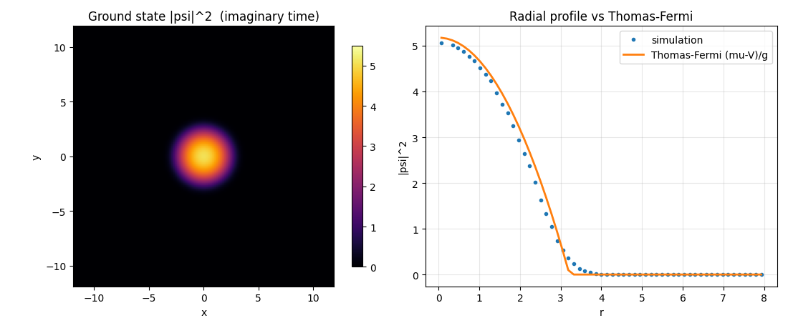
壁をすり抜ける波
\[ i\hbar\,\frac{\partial\psi}{\partial t} = -\frac{\hbar^2}{2m}\,\frac{\partial^2\psi}{\partial x^2} + V(x)\,\psi, \qquad V(x)=\begin{cases}V_0 & (|x|<a)\\ 0 & (\text{それ以外})\end{cases} \]
高さ \(V_0\)・幅 \(2a\) の矩形障壁。古典では \(E<V_0\) の粒子は越えられない。
なぜしみ出す？ 障壁内では \(\psi''=+\kappa^2\psi\)（\(\kappa=\sqrt{2m(V_0{-}E)}/\hbar\)）で、波は振動せず指数減衰 \(\psi\propto e^{-\kappa x}\)。\(\psi\) は連続でゼロに飛べず壁にしみ込み、薄ければ反対側に漏れて透過（\(T\sim e^{-2\kappa a}\)）。光の全反射のエバネッセント波と同じ。
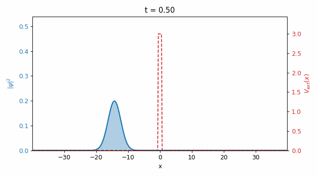
形を保って振動するコヒーレント状態
\[ i\hbar\,\frac{\partial\psi}{\partial t} = -\frac{\hbar^2}{2m}\,\frac{\partial^2\psi}{\partial x^2} + \tfrac12 m\omega^2 x^2\,\psi \]
放物線 \(V(x)=\tfrac12 m\omega^2 x^2\)。固有状態 \(n=0,1,2,\dots\)（\(E_n=(n{+}\tfrac12)\hbar\omega\)）は定常で \(|\psi|^2\) は動かない。
なぜ図は動く？ これはコヒーレント状態＝固有状態の重ね合わせ。エネルギーの違う成分の位相が別々の速さで回り、その干渉で \(|\psi|^2\) が動く。準位間隔が一定 \((\hbar\omega)\) なので広がらず、古典粒子と同じ振動。
やったこと：基底状態のガウスを中心から \(x_0\) ずらした初期条件で実時間発展 → \(x_c(t)=x_0\cos\omega t\) で往復を確認。
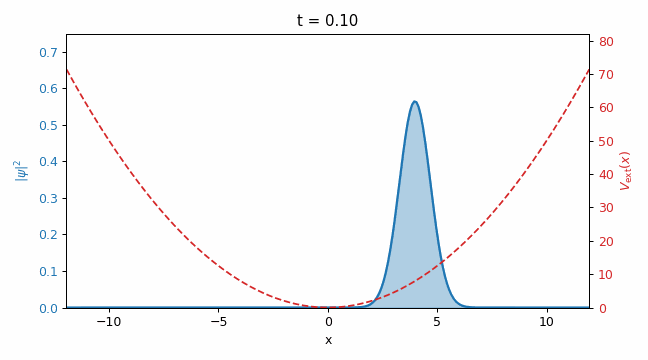
相互作用を入れると超流動・量子渦の世界へ
非常に低温にすると、ボース粒子（原子）の大多数が最低エネルギー準位に落ち込む＝ボース・アインシュタイン凝縮。
個々の粒子の個性が消え、集団全体を1つの巨視的な波動関数 \(\psi(\mathbf r,t)\) で書ける（秩序変数）。 密度 \(n=|\psi|^2\) と位相 \(\theta\) をもつ粘性ゼロの圧縮性量子流体（超流動）。その支配方程式が次の GP 方程式。
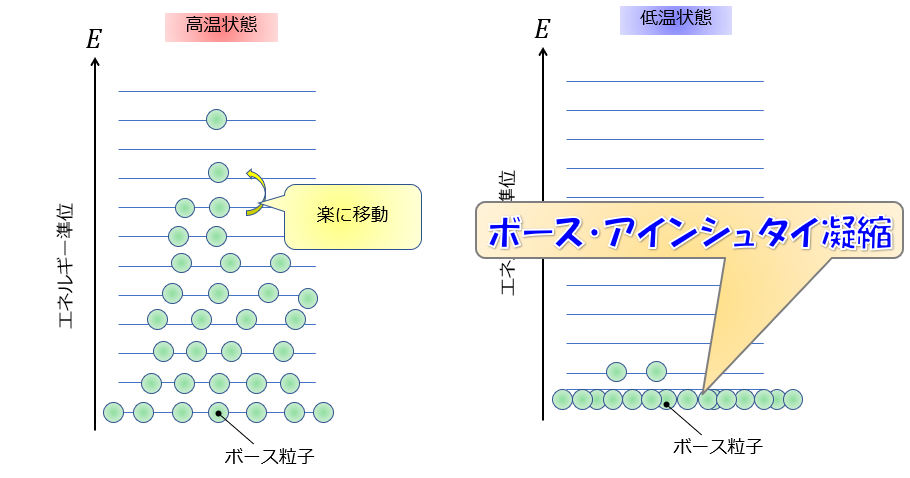
BECの巨視的波動関数 \(\psi\) の時間発展を決める方程式。シュレーディンガー方程式との違いは相互作用項 \(g|\psi|^2\) があること：
\[ i\hbar\,\frac{\partial\psi}{\partial t} = \Big[-\frac{\hbar^2}{2m}\nabla^2 + V_\mathrm{ex} + g|\psi|^2\Big]\psi \]
各項の意味
\(\psi\) の意味も違う
→ 積分したときの意味が違う
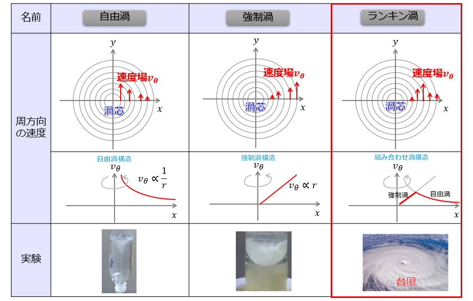
量子渦は、遠方で自由渦と同じ \(v_\theta\propto1/r\) になる。違いは次のスライド。
波動関数 \(\psi=\sqrt{n}\,e^{i\theta}\) は1価（速度場 \(\mathbf v=\frac{\hbar}{m}\nabla\theta\)）。渦を1周した位相変化は \(2\pi\) の整数倍に限られ、循環が \(\kappa=h/m\)（循環量子）の整数倍に量子化される。
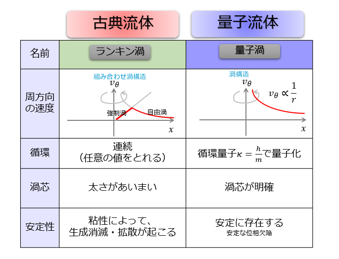
要点：循環の量子化・密度ゼロの明確な芯・無粘性で安定（消えない位相欠陥）。だから量子渦は“粒”のように数えられる。
希薄BEC（原子気体）○
超流動ヘリウム △
同じ「超流動・量子渦」でも、薄い気体はGP直接計算／濃いHeは渦糸法という住み分け。
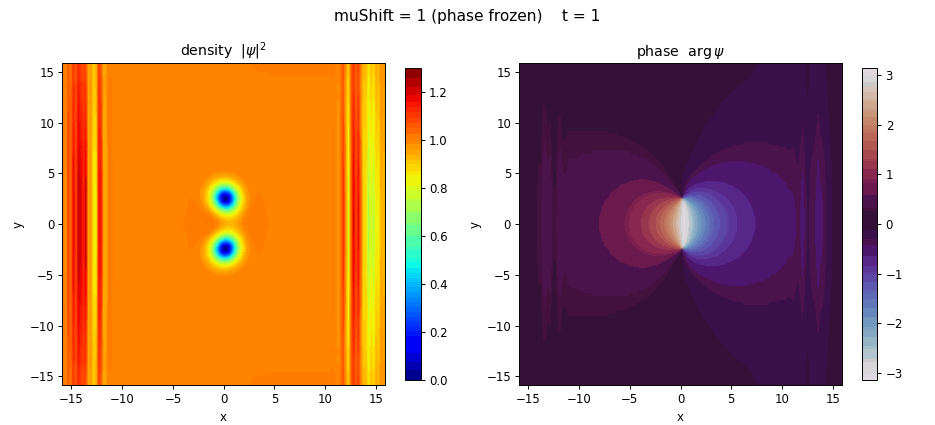
導出：1本の渦は周りに \(v_\theta=\dfrac{\kappa}{2\pi r}\)（\(\kappa=h/m\)）の流れをつくる。各渦は相手の作る流れに乗って動く → 反渦は渦から距離 \(d\) の点で \(\dfrac{\kappa}{2\pi d}\) の速度を受ける。対称なので対全体が間隔 \(d\) を保ったまま \[ v=\frac{\kappa}{2\pi d}=\frac{\hbar}{m\,d} \] で並進。実測がこの理論値と一致。
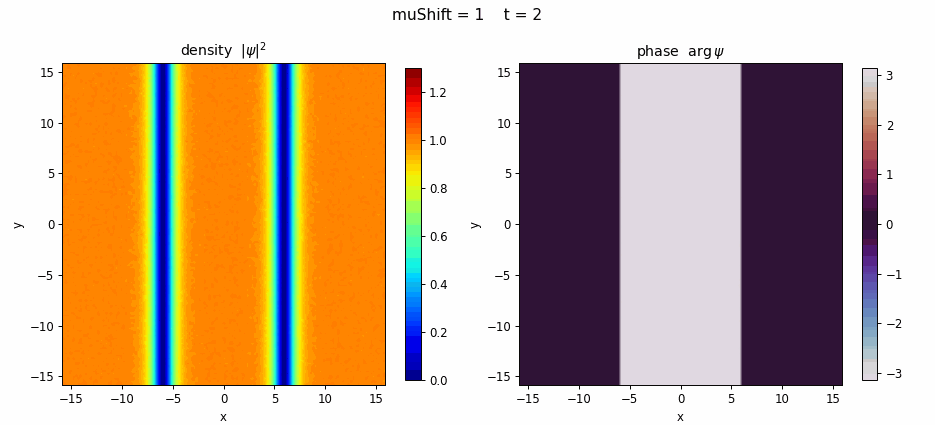
種（摂動）があって初めて崩壊：きれいな溝は「不安定だが定常」。ノイズを入れると乱流まで崩れる。
位相欠陥とは
\(\psi=\sqrt{n}\,e^{i\theta}\)。渦を1周すると \(\theta\) が \(2\pi\) 巻く → 中心は位相が定義できない特異点。\(\psi\) を1価に保つため、そこで密度 \(n=0\)。この「巻き数（整数）をもつ特異点」が位相欠陥。巻き数は連続変形で変えられない（トポロジカル）ので、孤立した1個は消えない（結晶の転位と同じ発想）。
なぜ渦がぶつかって消える？
渦(\(+1\))と反渦(\(-1\))は巻き数が逆で合計0。出会うと \(+2\pi\) と \(-2\pi\) が打ち消し合い対消滅（全体の巻き数0は保存＝矛盾しない）。放出エネルギーは音波（フォノン）へ。同符号どうしは反発して消えない。
ダークソリトン崩壊は渦-反渦ペアを大量に生む → あちこちで対消滅が起きる（無粘性でも渦が減る）。
Madelung 変換で GP＝流体方程式
GP方程式に、波動関数を「振幅×位相」で書いた形を代入する：
\[ \psi=\sqrt{n}\;e^{i\theta},\qquad \mathbf{v}=\frac{\hbar}{m}\nabla\theta \]
\(n=|\psi|^2\) は流体の密度、\(\mathbf{v}\) は流速。実部・虚部に分けて整理すると…
流速は位相からも波動関数からも定義できる：\(\mathbf v=\dfrac{\hbar}{m}\nabla\theta=\dfrac{\hbar}{m}\dfrac{\mathrm{Im}(\psi^{*}\nabla\psi)}{|\psi|^2}\)（密度は \(n=|\psi|^2\)）。これを使うと、次の2つの式が導けます。
連続の式（質量保存）：
\[ \frac{\partial n}{\partial t} + \nabla\!\cdot(n\mathbf{v}) = 0 \]
オイラー方程式（運動量保存）＋量子圧力：
\[ m\Big(\frac{\partial\mathbf{v}}{\partial t}+(\mathbf{v}\!\cdot\!\nabla)\mathbf{v}\Big) = -\nabla(V+g\,n) + \frac{\hbar^2}{2m}\nabla\!\Big(\frac{\nabla^2\sqrt{n}}{\sqrt{n}}\Big) \]
右辺は \(-\nabla(V+g\,n)\)＝ポテンシャル＋圧力（\(g\,n\) は状態方程式 \(P\propto n^2\)）と量子圧力（Bohm項）。 ＝非粘性ナビエ・ストークス（オイラー方程式）＋量子圧力。方程式の形が流体そのものなので、同じ数値解法（有限体積法＝OpenFOAM）で解ける。
運動方程式を項ごとに並べると大半は同じ。違いは粘性項と量子圧力項の2つだけ。
| 項目 | 通常の流体（ナビエ・ストークス） | 量子流体（GP） |
|---|---|---|
| 時間変化 | \(\dfrac{\partial\mathbf v}{\partial t}\) | \(\dfrac{\partial\mathbf v}{\partial t}\) |
| 移流項 | \((\mathbf v\!\cdot\!\nabla)\mathbf v\) | \((\mathbf v\!\cdot\!\nabla)\mathbf v\) |
| 圧力項 | \(-\dfrac{1}{mn}\nabla p\) | \(-\dfrac{1}{mn}\nabla p\) |
| 粘性項 | \(\nu\nabla^2\mathbf v\) | 無 |
| 外部ポテンシャル | \(-\dfrac{1}{m}\nabla V\) | \(-\dfrac{1}{m}\nabla V\) |
| 量子圧力項 | 無 | \(\dfrac{1}{m}\nabla\!\Big(\dfrac{\hbar^2}{2m\sqrt n}\nabla^2\sqrt n\Big)\) |
NSにあってGPにないのが粘性（量子流体は無粘性＝超流動）、GPにあってNSにないのが量子圧力。それ以外は同じ形。
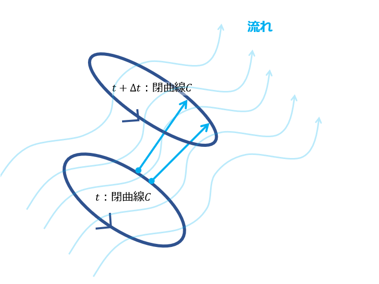
\[ \frac{d\Gamma}{dt}=0,\quad \Gamma=\oint_{C}\mathbf v\cdot d\mathbf l \]
非粘性・バロトロピック（圧力が密度だけで決まる）な流体では、流体と一緒に動くループ \(C\) 上の循環 \(\Gamma\) が保存。帰結：
GP方程式には粘性項がありません。それならケルビンの定理どおり、渦のない状態からは渦ができないように思えます。ここで効いてくるのが量子圧力項です。
\[ \frac{\hbar^2}{2m}\nabla\!\Big(\frac{\nabla^2\sqrt{n}}{\sqrt{n}}\Big) \]
量子圧力があるおかげで、密度をゼロに落としてもエネルギーが発散しません。すると、その密度ゼロ点に位相が \(2\pi\) 巻いた量子渦を作れます。渦ができるとそれを囲むループの循環が \(\kappa=h/m\) だけ変わる（＝「渦なし」から「渦あり」へ）。粘性ゼロでも渦が生成できるのはこのためで、これは古典の非粘性流体（ケルビンの定理）では起こりません。
実例：ダークソリトンが崩れて密度ゼロの節ができる所に、位相の \(2\pi\) 巻き＝量子渦が生まれます。
2次元量子乱流BECの自由膨張へ
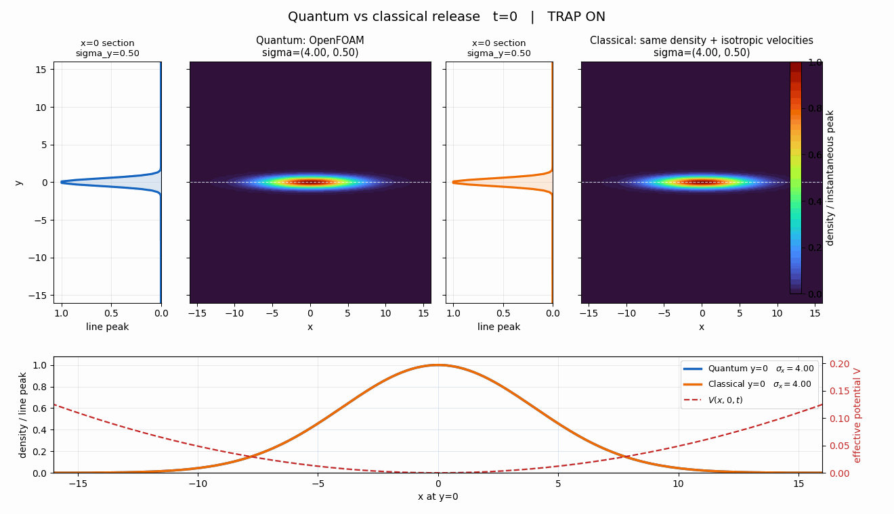
量子 → 反転する
不確定性原理 \(\Delta p\gtrsim \hbar/\Delta x\)：きつく閉じ込めた軸ほど運動量の広がりが大きい → その軸へ速く膨張。
古典 → 反転しない
速度の広がりは温度だけの等方的なもの（等分配 \(\langle v^2\rangle=k_BT/m\)）→ どの向きも同じ速さで膨張し丸くなる。
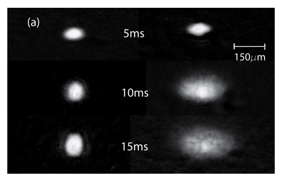
通常のBEC（渦なし）
解放するとアスペクト比が反転（前ページと同じ）。短軸方向へ速く伸びる。
量子乱流BEC（多数の量子渦）
解放してもアスペクト比を保ったまま自己相似的に膨張する（反転しない）。
なぜ乱流だとアスペクト比が保たれるのか。ここを調べたい。
schrodingerFoam で 2次元の量子乱流（多数の量子渦）をつくる。技術課題：相互作用ありの乱流をつくること／箱の端での反射を防ぐこと（吸収境界・領域拡大）。
今日の要点
コード：github.com/kamakiri1225/schrodingerFoam
解説：ブログ全7回（takun-physics.net）